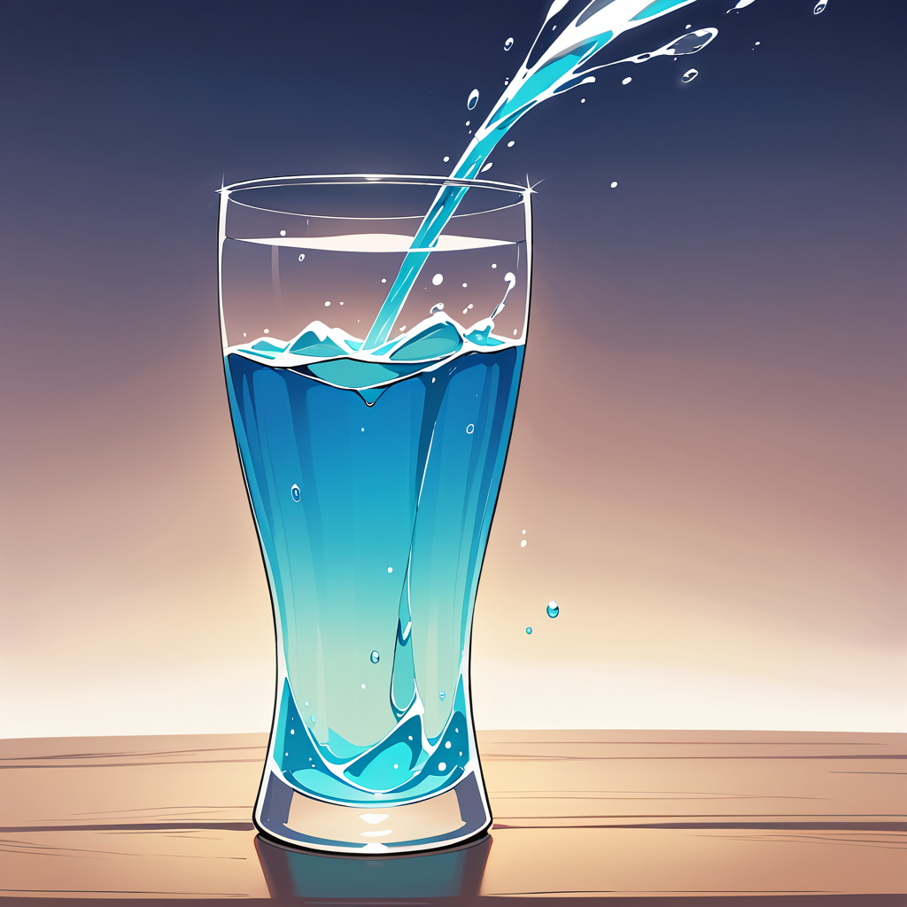

La Materia: El Ingrediente Mágico del Universo
La materia es como el "ingrediente mágico" que forma todo lo que puedes ver y tocar. Es lo que hace que las cosas tengan peso y ocupen espacio. Cuando hablamos de materia, estamos hablando de todo lo que compone el mundo físico, desde objetos cotidianos como una pelota, una mesa o una silla, hasta cosas que no podemos ver, como el aire que respiramos.
Una parte importante de la materia es su masa, que es como la cantidad de "ingrediente" que tiene un objeto. La masa se mide en kilogramos o gramos y nos indica cuánta materia hay en un objeto. Por ejemplo, una pelota de fútbol tiene más masa que una pelota de tenis, lo que significa que contiene más materia.
Otra característica fundamental de la materia es el volumen, que es el espacio que ocupa un objeto. Se mide en litros o metros cúbicos. Por ejemplo, si tienes una pelota grande, ocupa más espacio (más volumen) que una pelota pequeña. Esto significa que, aunque ambas pelotas pueden parecer similares en forma, la cantidad de espacio que ocupan es diferente.
Además, la materia puede estar en diferentes estados físicos, dependiendo de cómo estén organizados sus átomos y moléculas. Esta organización está influenciada por la densidad, que es la cantidad de masa en un volumen dado.
Los estados más comunes de la materia son:
- Sólido:
Los sólidos son como una piedra, que siempre mantiene su forma y ocupa el mismo espacio. En un sólido, los átomos están muy juntos y no se mueven mucho, lo que les da una estructura definida y una forma fija. Por ejemplo, un cubo de hielo tiene una forma y un volumen específicos. Si lo pones en un plato, permanecerá en la misma forma y no se esparcirá por el plato.

- Líquido:
Los líquidos son como el agua, que puede cambiar de forma dependiendo de dónde la pongas, pero siempre ocupa la misma cantidad de espacio. En los líquidos, los átomos están un poco más separados en comparación con los sólidos y pueden moverse unos sobre otros, lo que les permite fluir y adaptarse a la forma del recipiente que los contiene. Por ejemplo, si viertes agua en un vaso, el agua tomará la forma del vaso, pero el volumen del agua seguirá siendo el mismo.

- Gaseoso:
Los gases son como el aire o el vapor, que no tienen una forma ni un volumen fijo. En el estado gaseoso, los átomos están muy separados y se mueven rápidamente en todas direcciones. Esto significa que un gas puede expandirse para llenar cualquier espacio disponible. Por ejemplo, el vapor de agua en el aire se dispersa y no se puede ver en su totalidad, pero ocupa espacio en la atmósfera.
Cambio de Estados
La razón por la que los objetos pueden ser sólidos, líquidos o gases tiene que ver con la temperatura y la presión. La temperatura se refiere a cuán caliente o frío está un objeto, mientras que la presión es la fuerza ejercida por los átomos o moléculas en un área determinada. Cuando se aplica calor a un sólido, como el hielo, los átomos comienzan a moverse más y, eventualmente, el hielo se derrite y se convierte en agua, un líquido. Si sigues calentando el agua, sus átomos se moverán aún más rápido y se convertirán en vapor, un gas.
Este fenómeno es un ejemplo de un cambio de estado, donde la materia puede transformarse de un estado a otro al variar la temperatura o la presión.
-
Ejemplo de cambio de estado:
Si calientas hielo (sólido), se convierte en agua (líquido) y, si calientas aún más el agua, se convierte en vapor (gaseoso).
En resumen, la materia es fundamental para entender cómo funciona nuestro mundo. Su masa y volumen son propiedades clave que nos permiten clasificarla en diferentes estados: sólido, líquido y gas. Estos estados dependen de la temperatura y la presión, lo que nos muestra cómo los cambios en el entorno pueden transformar los materiales que nos rodean.
¿Los 3 estados de la Materia?
Explicación rápida: la materia es todo lo que podemos ver, tocar o sentir, y que puede estar en tres estados: sólido, líquido y gas. También menciona que la materia puede cambiar de estado dependiendo de factores como la temperatura.
Ahora responde las preguntas: